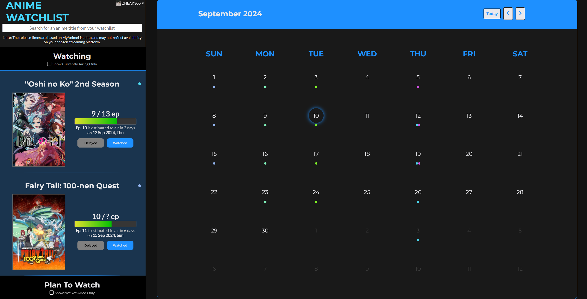

Go To Code
Visit Site
I designed this site to improve the experience of tracking upcoming anime and episode releases.
The streaming platform that I currently use to watch my anime is CrunchyRoll and I use MyAnimeList to track and manage by anime progress.
CrunchyRoll provides countdown for anime releases, but only for the ones that they believe to be the next big hit, for example, Kaiju No.8.
MyAnimeList used to notify me when anime episodes release but they have stopped. I believe the reason is because the forum sections,
which used to notify me for releases is run by the community, is prone to trolling.
So I combined both features and made my own site.
Home screen 
Things that I have learnt during development:
- How to create API endpoints and use them
- OAuth and how to securely store and exchange tokens
- Attempting to design UI without making the screen feel cluttered
- Colouring and how to emphasise certain UI elements like buttons
- How to use React
- Cloud Computing and running web servers
- Linux and Virtual Machines